6 Plot Cosmetics
6.1 Introduction
Beyond mapping data to aesthetics, ggplot2 provides extensive control over
the visual appearance of your plots. This chapter covers the “cosmetic”
aspects: coordinate systems, position adjustments, themes, labels, legends,
and axis formatting.
Note: This chapter introduces many concepts, but not all are equally
important. Some (like zooming with coord_cartesian() and using built-in
themes) are frequently useful, while others (like polar coordinates or
customising individual theme elements) are more specialised. See the summary
at the end of this chapter for a priority guide.
We continue to follow the grammar of graphics: first we create layers using geoms (Chapter 3), then we add scale layers to control aesthetics (Chapters 4 and 5), and now we add coordinate systems and themes to control the overall appearance.
6.2 Incremental workflow
A powerful feature of ggplot2 is that you can build plots incrementally by
saving them as objects and adding layers or modifications later. This is
covered in detail in Practical 5, but the key ideas are:
- Save plots as objects:
p <- ggplot(...) + geom_point() + ... - Add layers later:
p + theme_minimal()orp + scale_colour_viridis_d() - Use
last_plot()interactively: In the console,last_plot()returns the most recently created plot, allowing quick refinements
This approach is particularly useful when experimenting with different colour schemes, themes, or labels without rewriting the entire plot code.
6.3 Coordinate systems
The coordinate system determines how x and y positions are interpreted and displayed.
6.3.1 Cartesian coordinates (default)
The default coord_cartesian() uses standard Cartesian coordinates. Its main
use is to zoom into a plot without removing data.
Recall from Section 5.5 that setting axis limits with
scale_*_continuous(limits = ) removes data outside the specified range.
This can be problematic if you later add fitted lines or smoothers, which would
be computed from the truncated data. In contrast, coord_cartesian() zooms
visually while preserving all data for calculations:
ggplot(mpg, aes(x = displ, y = hwy)) +
geom_point() +
coord_cartesian(xlim = c(2, 6), ylim = c(15, 40)) +
labs(x = "Engine Displacement (L)", y = "Highway MPG")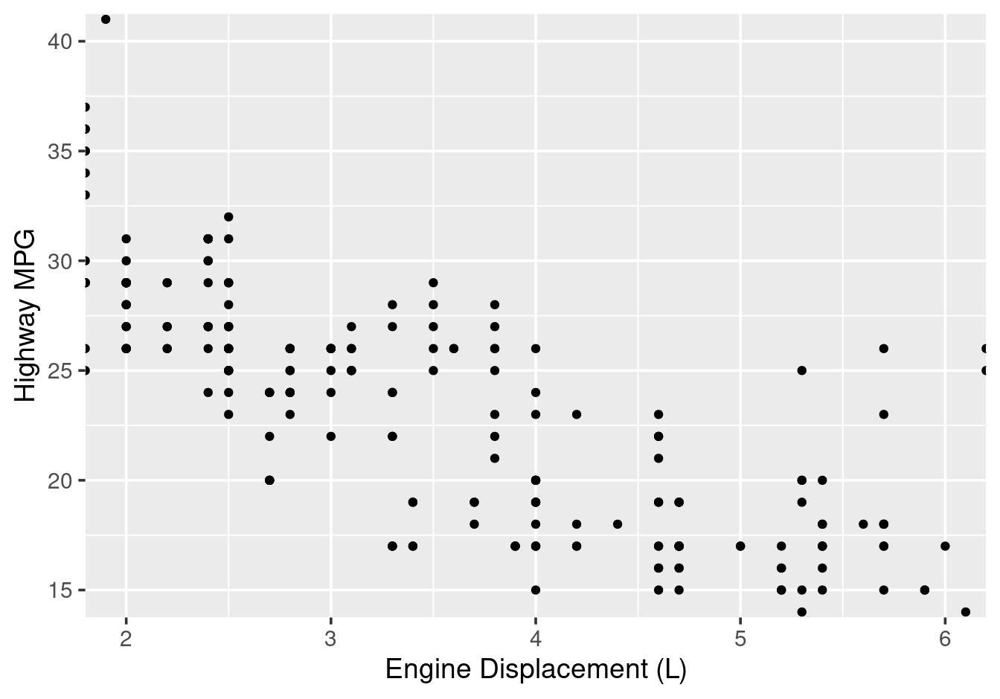
Figure 6.1: Zooming with coord_cartesian() preserves all data.
Compare this to the example in Section 5.5, which used the same
limits with scale_*_continuous(). The visual result is similar, but
coord_cartesian() is safer when you need all data points for statistical
layers. See also Section 7.4 in Chapter 7 for
a side-by-side comparison of all three approaches, including dplyr::filter().
6.3.2 Fixed aspect ratio
Use coord_fixed() to enforce a specific aspect ratio:
ggplot(mpg, aes(x = cty, y = hwy)) +
geom_point() +
coord_fixed(ratio = 1) +
labs(x = "City MPG", y = "Highway MPG")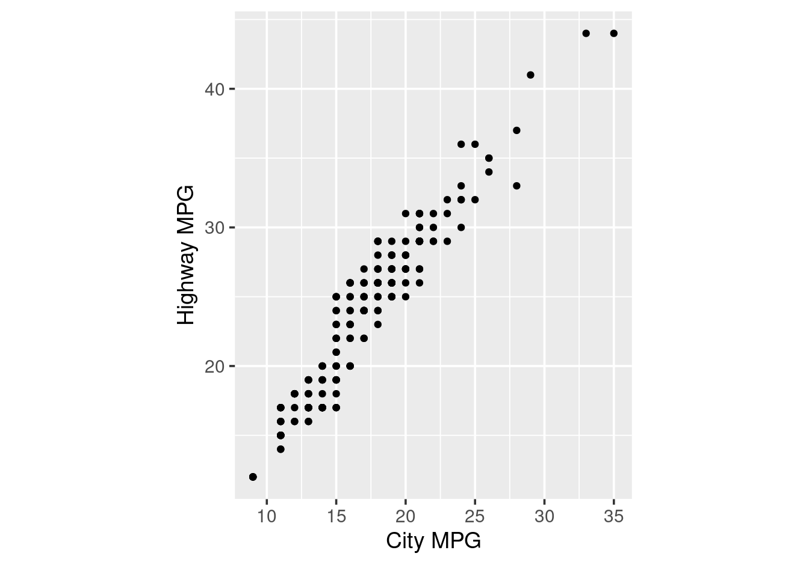
Figure 6.2: Fixed 1:1 aspect ratio.
6.3.3 Flipped coordinates
coord_flip() swaps x and y axes. This is useful for horizontal bar charts:
ggplot(mpg, aes(x = class)) +
geom_bar() +
coord_flip() +
labs(x = "Vehicle Class", y = "Count")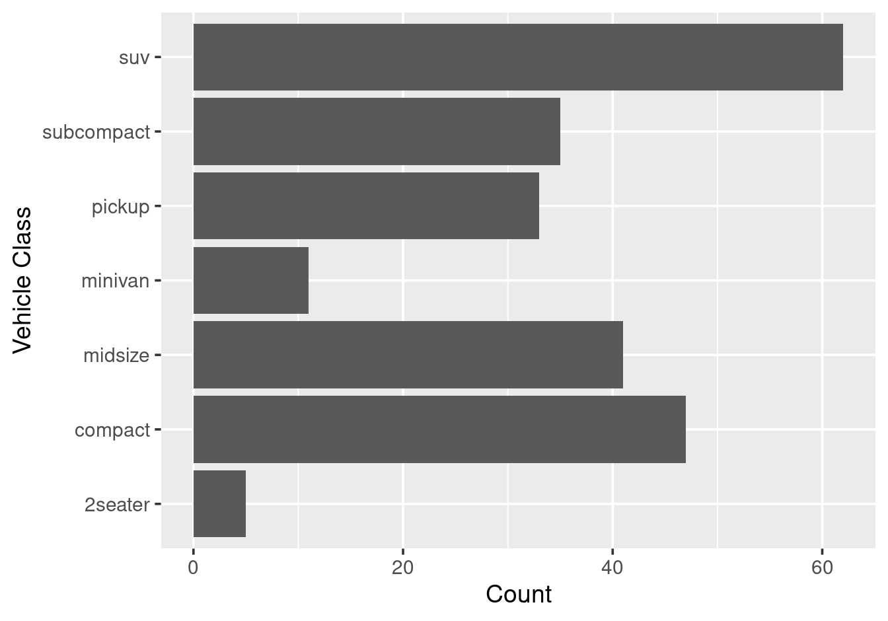
Figure 6.3: Horizontal bar chart using coord_flip().
Note: After flipping, the x argument in labs() refers to what appears
as the vertical axis, and y refers to the horizontal axis. This is
correct but can be confusing — you label based on the original mapping, not
the visual appearance.
6.3.4 Polar coordinates
coord_polar() transforms Cartesian coordinates to polar coordinates. A pie
chart is essentially a stacked bar chart wrapped into a circle:
ggplot(mpg, aes(x = "", fill = drv)) +
geom_bar(width = 1) +
coord_polar(theta = "y") +
labs(fill = "Drive Type") +
theme_void()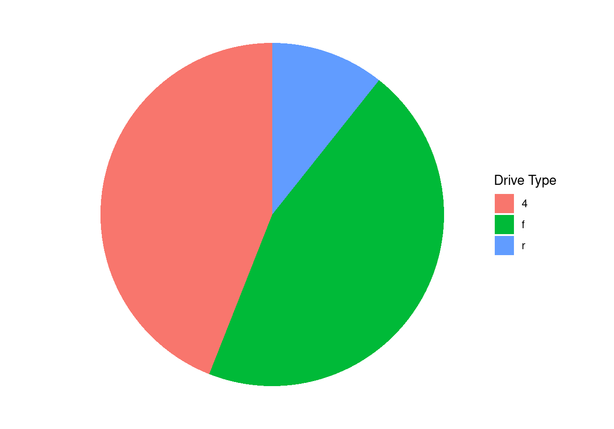
Figure 6.4: Pie chart using coord_polar() — a bar chart wrapped into a circle.
Here, geom_bar() creates a stacked bar (counting observations), and
coord_polar(theta = "y") wraps it into a circle where the angle represents
the count.
Note: Pie charts are generally discouraged because comparing angles is harder than comparing lengths. A simple bar chart is almost always easier to read.
6.4 Position adjustments
Position adjustments control how overlapping geoms are handled. We have already seen two common position adjustments in Chapter 3:
- Jittering with
geom_jitter()to reveal overlapping points (Section 3.7.2) - Dodging with
position = "dodge"to place bars side by side
Here we provide more detail and additional options.
6.4.1 Jittering (for overplotting)
When points overlap, adding small random noise reveals the underlying
distribution. Use geom_jitter() or position_jitter():
ggplot(mpg, aes(x = drv, y = hwy)) +
geom_jitter(width = 0.2, height = 0) +
labs(x = "Drive Type", y = "Highway MPG")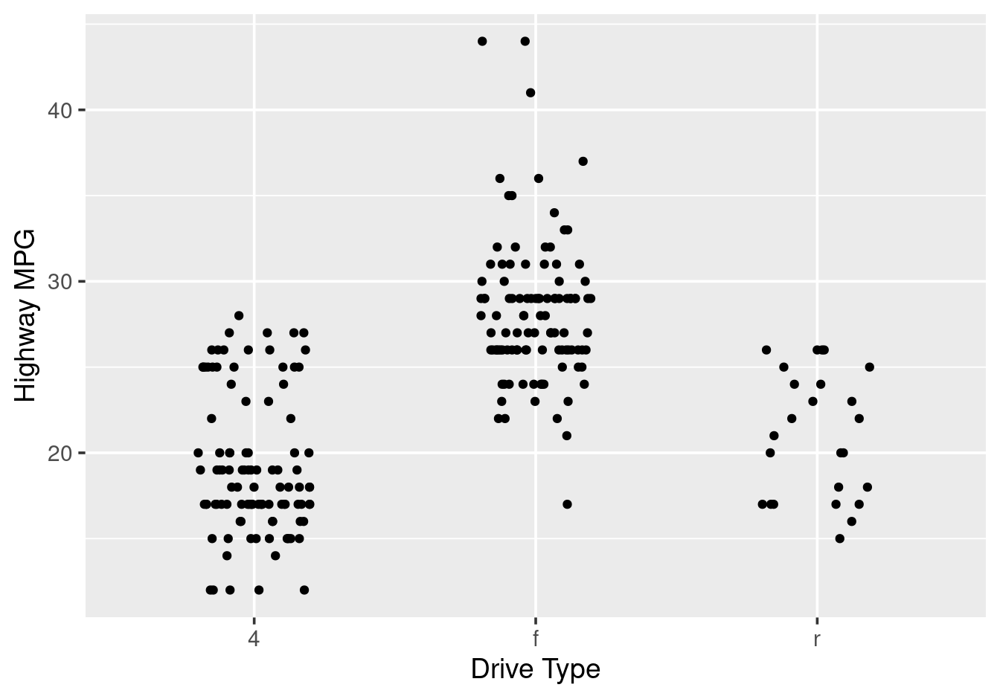
Figure 6.5: Jittered points to reveal overplotting.
The width and height arguments control the amount of jitter. Setting
height = 0 prevents vertical jitter, which is appropriate when the \(y\)-axis
represents measured values.
6.4.2 Dodging (side by side)
Dodging places bars (or other geoms) side by side rather than stacked. We have already seen this in Section 3.8.1 for grouped bar charts:
ggplot(mpg, aes(x = drv, fill = factor(cyl))) +
geom_bar(position = "dodge") +
labs(x = "Drive Type", y = "Count", fill = "Cylinders")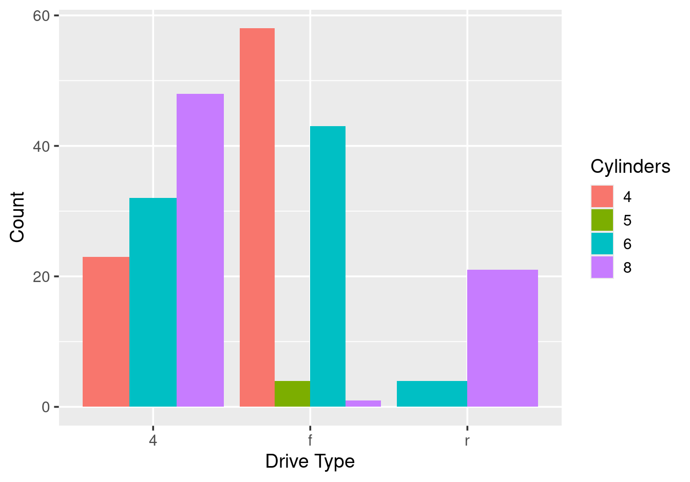
Figure 6.6: Dodged bars (side by side).
Use position_dodge2(preserve = "single") for bars of equal width when some
groups are missing:
ggplot(mpg, aes(x = drv, fill = factor(cyl))) +
geom_bar(position = position_dodge2(preserve = "single")) +
labs(x = "Drive Type", y = "Count", fill = "Cylinders")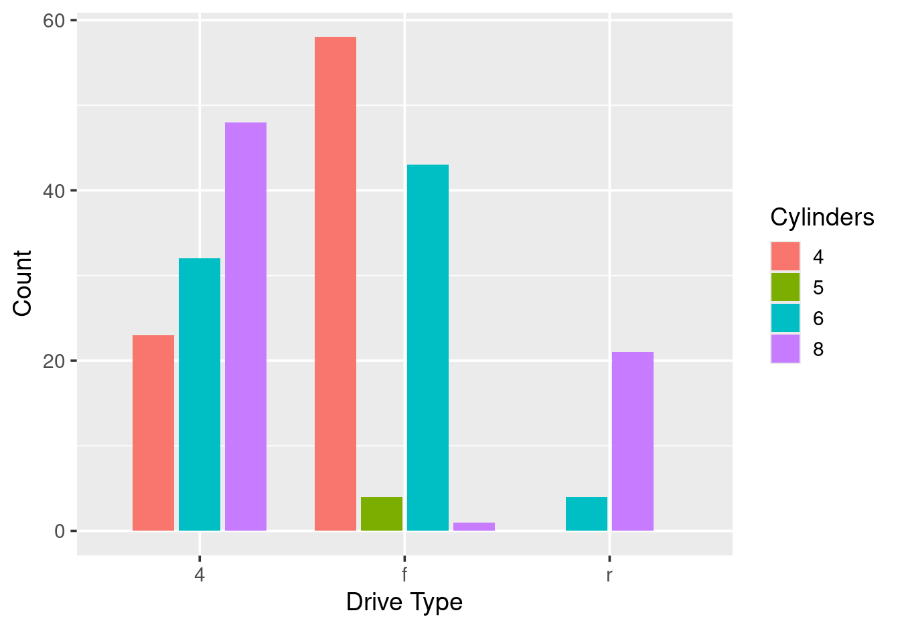
Figure 6.7: Dodged bars with equal width.
6.5 Themes
Themes control the non-data elements of a plot: background, grid lines, fonts, etc.
6.5.1 Built-in themes
ggplot2 provides several complete themes. Each theme function accepts a
base_size argument to control the overall font size (default is 11):
p <- ggplot(mpg, aes(x = displ, y = hwy)) +
geom_point() +
labs(x = "Engine Displacement (L)", y = "Highway MPG")
p + theme_grey(base_size = 14) # default theme, larger text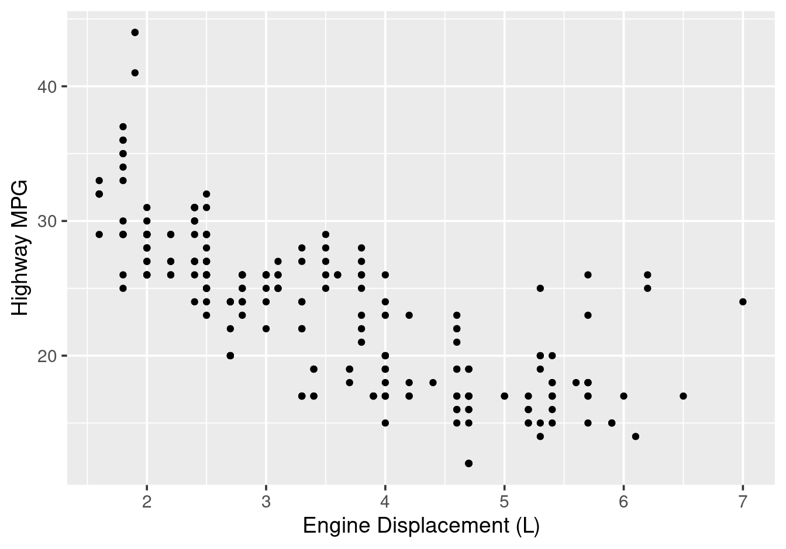
Figure 6.10: Default theme_grey().
p + theme_bw(base_size = 14)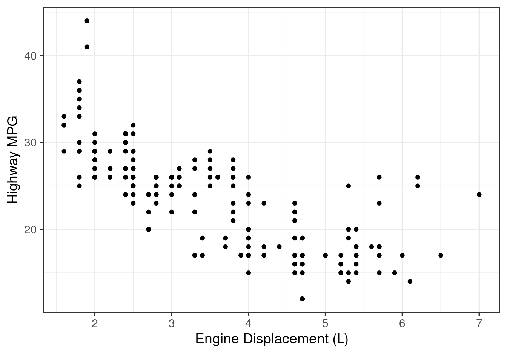
Figure 6.11: theme_bw() - black and white.
p + theme_minimal(base_size = 14)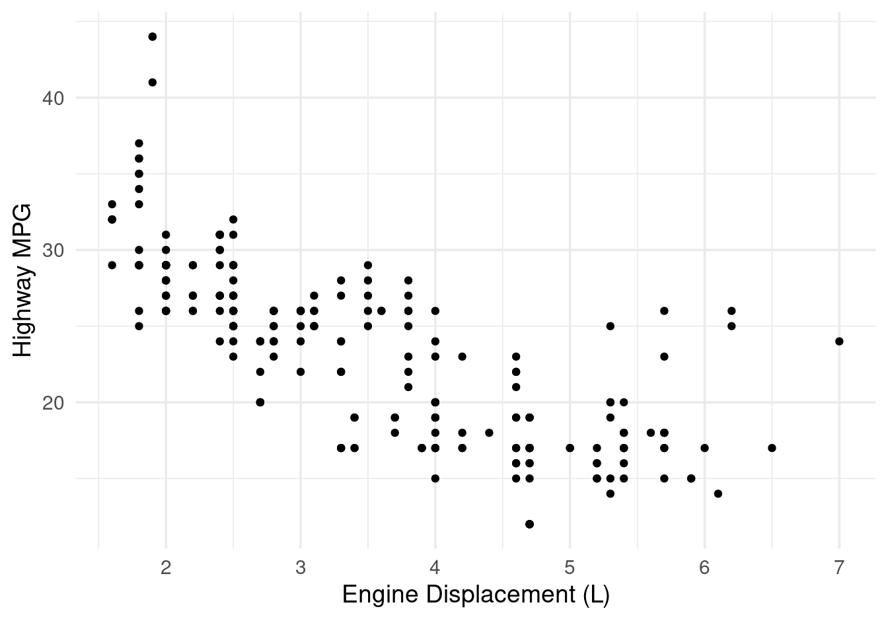
Figure 6.12: theme_minimal() - minimal.
p + theme_classic(base_size = 14)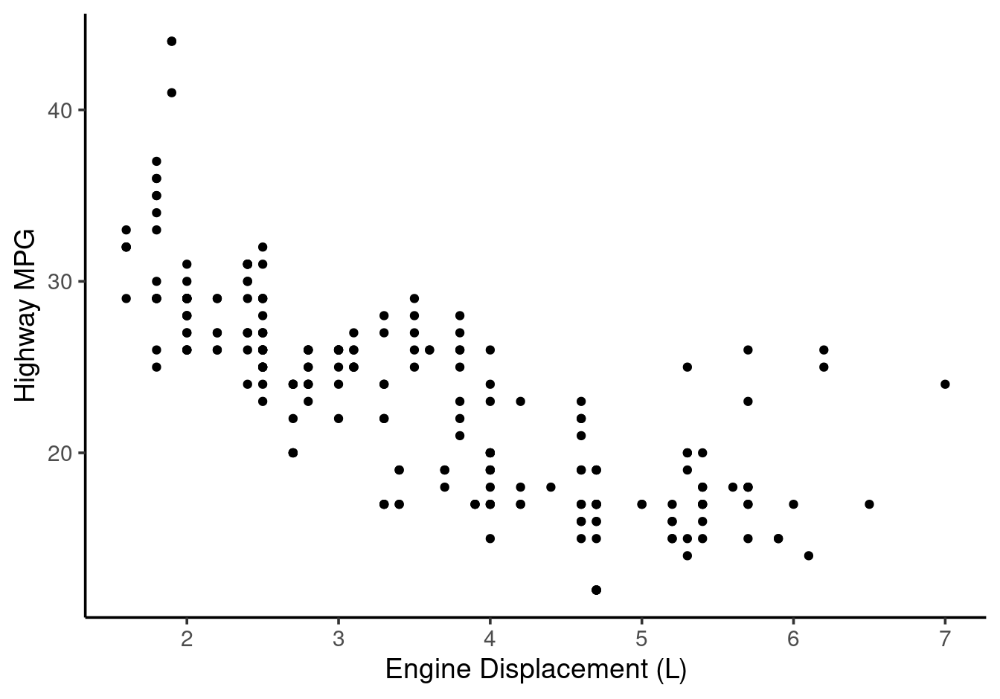
Figure 6.13: theme_classic() - classic.
Increasing base_size is an easy way to make plots more readable,
especially for presentations or publications.
6.5.2 Setting a global theme
Use theme_set() to change the default theme for all subsequent plots. You
can also set a larger base_size globally:
theme_set(theme_minimal(base_size = 14))This is particularly useful in R Markdown documents where you want consistent styling across all plots.
6.5.3 Customising individual elements
The theme() function has many arguments for customising specific elements
of a plot: titles, axis labels, tick labels, grid lines, backgrounds, legends,
and more. While these options exist, I recommend focusing on overall
legibility (through base_size and built-in themes) rather than spending
too much time on fine-grained customisation. The built-in themes are
well-designed and sufficient for most purposes. The one use of theme() that I would highlight is for the legend position - see Section 6.7.
6.6 Labels
We have already used labs() throughout this module for axis labels and
legend titles. Here we show that labs() can also add titles, subtitles,
and captions:
ggplot(mpg, aes(x = displ, y = hwy, colour = factor(cyl))) +
geom_point(size = 3) +
labs(
x = "Engine Displacement (L)",
y = "Highway MPG",
colour = "Cylinders",
title = "Fuel Efficiency by Engine Size",
subtitle = "Data from mpg dataset",
caption = "Source: EPA fuel economy data"
)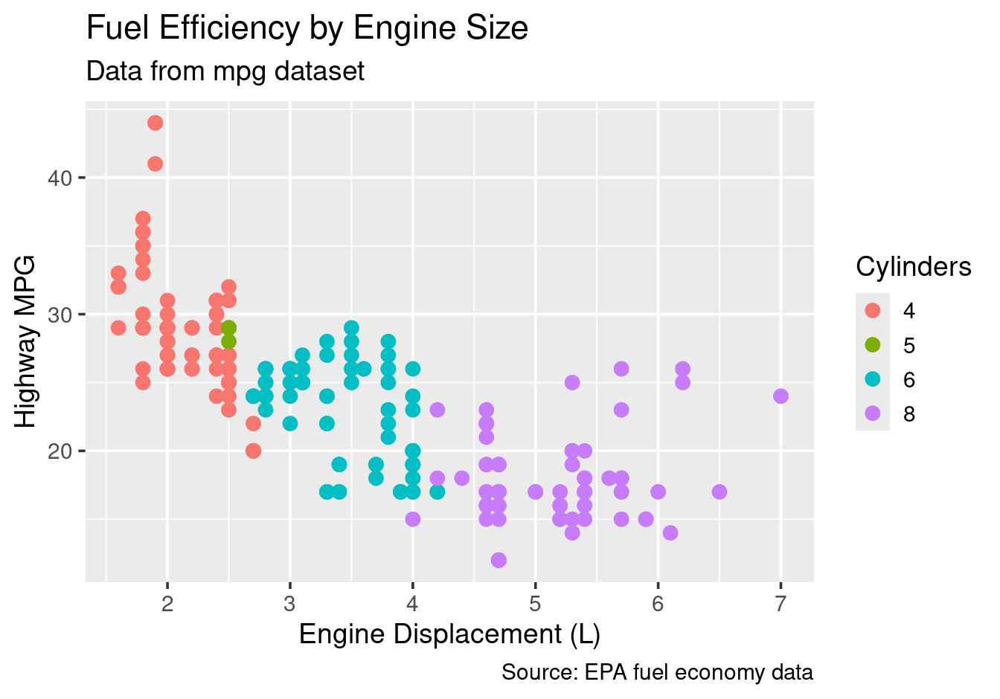
Figure 6.14: Using labs() for titles, subtitles, and captions.
Note how labs(colour = "Cylinders") fixes the ugly legend title that would
otherwise appear as “factor(cyl)”. Whenever you map an aesthetic to a
transformed variable (like factor(cyl) or log(value)), use labs() to
provide a clean title.
6.7 Legends
Legends are generated automatically when you map variables to aesthetics.
You can control their position using theme(legend.position = ).
6.7.1 Legend position
ggplot(mpg, aes(x = displ, y = hwy, colour = drv)) +
geom_point(size = 3) +
labs(x = "Engine Displacement (L)", y = "Highway MPG", colour = "Drive") +
theme(legend.position = "bottom")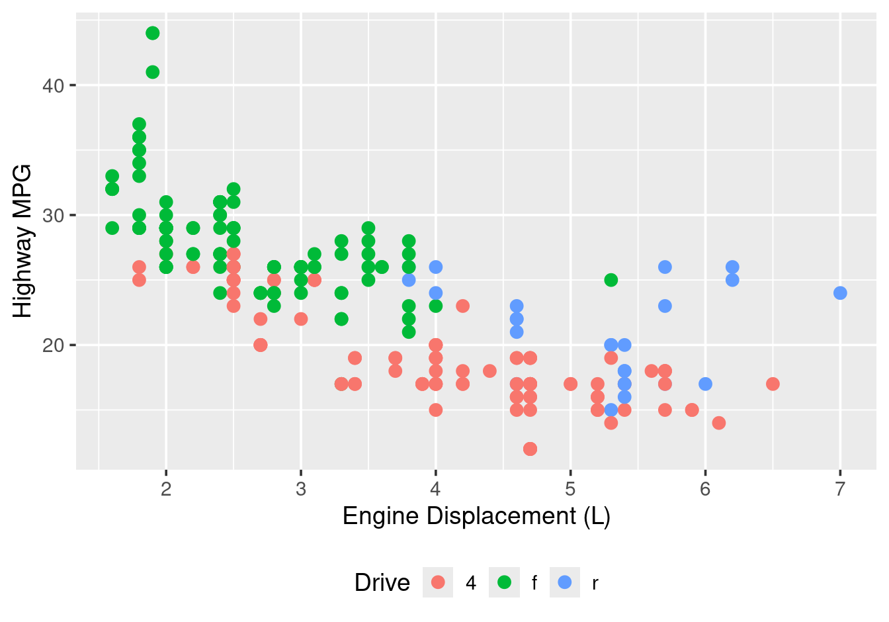
Figure 6.15: Legend positioned at bottom.
Options for legend.position:
"top","bottom","left","right": place legend outside the plot area"none": remove the legend entirely"inside": place legend inside the plot area (see below)
6.7.2 Legend inside the plot
To place a legend inside the plot area, use legend.position = "inside" along
with legend.position.inside to specify the coordinates:
ggplot(mpg, aes(x = displ, y = hwy, colour = drv)) +
geom_point(size = 3) +
labs(x = "Engine Displacement (L)", y = "Highway MPG", colour = "Drive") +
theme(
legend.position = "inside",
legend.position.inside = c(0.9, 0.8),
legend.background = element_rect(fill = "white", colour = "grey80")
)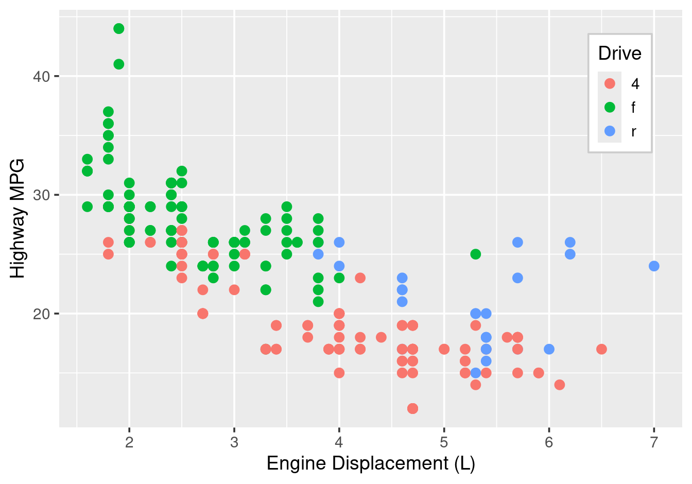
Figure 6.16: Legend inside the plot area.
The coordinates c(0.9, 0.8) specify the position as fractions of the plot
area (0 = left/bottom, 1 = right/top).
6.8 Axis formatting
6.8.1 Avoiding scientific notation
Large numbers are sometimes displayed in scientific notation (e.g., 1e+06
instead of 1,000,000). To use standard notation with comma separators, use
scales::label_comma():
# Create data with large values
big_data <- data.frame(
x = c(100000, 500000, 1000000, 2000000),
y = c(10, 25, 40, 55)
)
ggplot(big_data, aes(x = x, y = y)) +
geom_point(size = 3) +
scale_x_continuous(labels = scales::label_comma()) +
labs(x = "Population", y = "Value")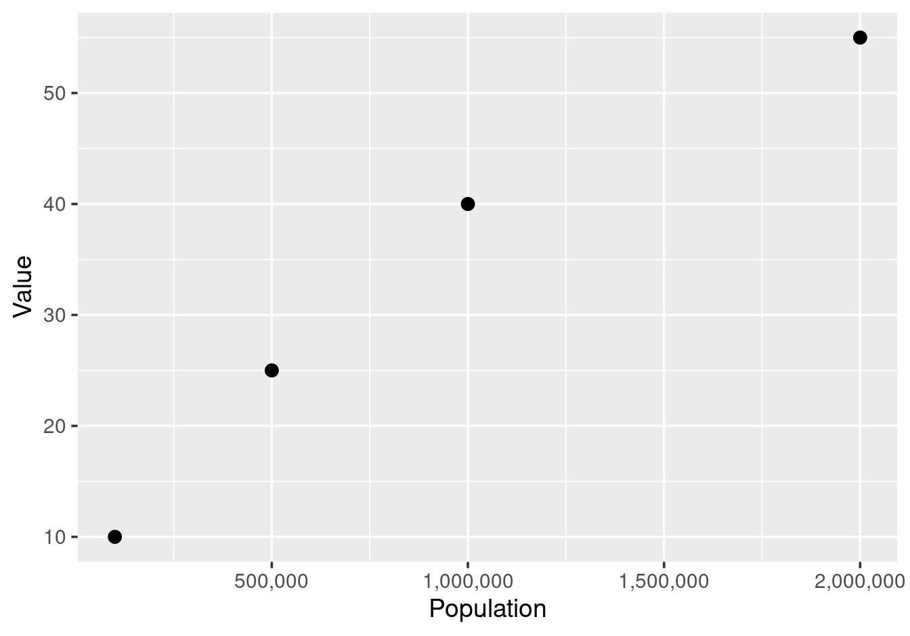
Figure 6.17: Avoiding scientific notation on axes.
Other useful label functions from the scales package:
| Function | Effect |
|---|---|
label_comma() |
Adds comma separators: 1,000,000 |
label_dollar() |
Adds currency symbol: $1,000 |
label_percent() |
Converts to percentage: 50% |
label_scientific() |
Forces scientific notation |
6.8.2 Controlling tick marks
Use scale_*_continuous() to control where tick marks appear (see also
Section 5.5 for axis transformations):
ggplot(mpg, aes(x = displ, y = hwy)) +
geom_point() +
scale_x_continuous(breaks = seq(2, 7, by = 1)) +
scale_y_continuous(breaks = seq(15, 45, by = 5)) +
labs(x = "Engine Displacement (L)", y = "Highway MPG")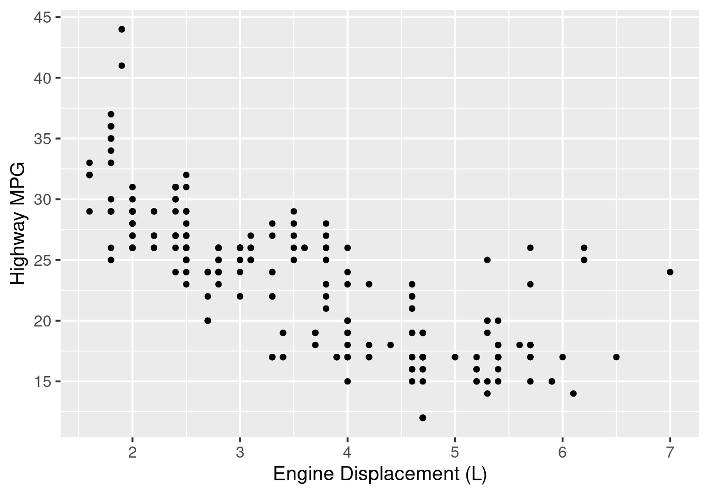
Figure 6.18: Custom tick mark positions.
6.9 Summary
The following table summarises the topics covered in this chapter with their priority for this module:
| Topic | Section | Priority |
|---|---|---|
| Cartesian coordinates (zooming) | 6.3.1 | High |
| Fixed aspect ratio | 6.3.2 | Medium |
| Flipped coordinates | 6.3.3 | Medium |
| Polar coordinates | 6.3.4 | Low |
| Position adjustments | 6.4.2 | Medium (already covered) |
| Built-in themes | 6.5.1 | Medium |
| Setting a global theme | 6.5.2 | Medium |
| Customising individual elements | 6.5.3 | Low |
| Labels | 6.6 | Medium (already covered) |
| Legend position | 6.7.1 | Medium |
| Legend inside the plot | 6.7.2 | Low |
| Avoiding scientific notation | 6.8 | Low |
| Controlling tick marks | 6.8 | Low (for now) |
Key takeaways:
- Use
coord_cartesian()to zoom without removing data - Use
theme_*()functions withbase_sizefor easy, consistent styling - Use
labs()to fix legend titles and add titles/captions - Position adjustments (
"dodge","jitter") were introduced in Chapter 3